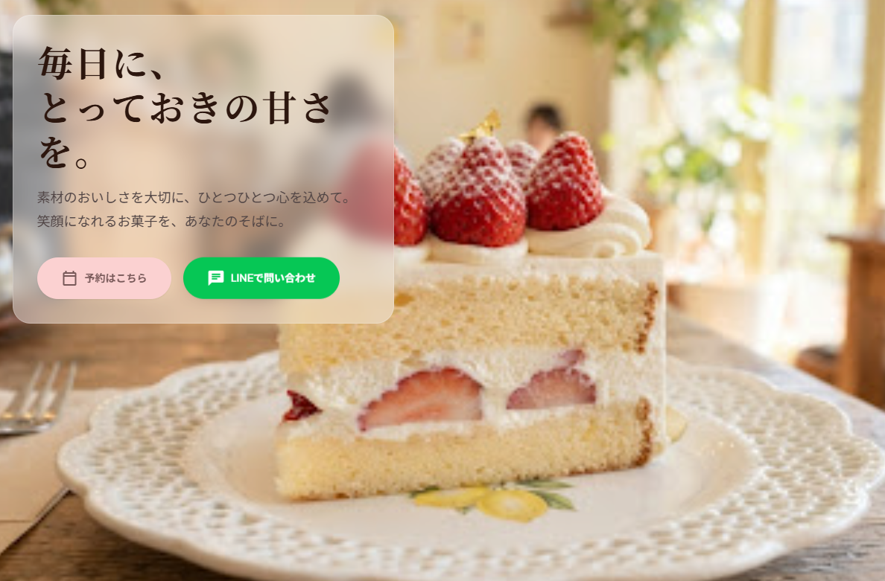
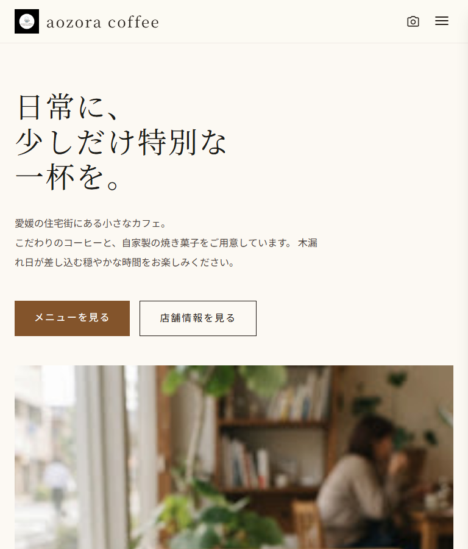
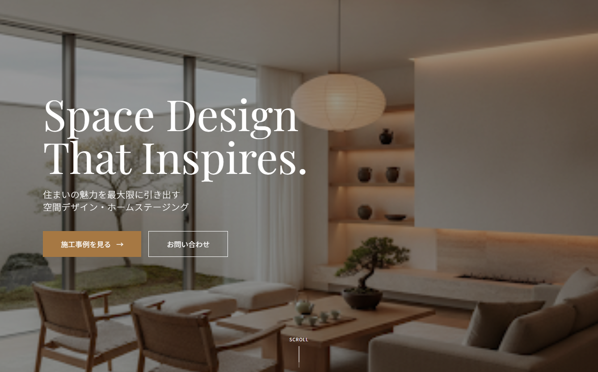

Excelへの入力や転記を毎回手作業で行っている
中小企業・個人事業のご相談｜全国オンライン対応
「こんな作業、もっと楽にならない？」
を一緒に考えます。
何を作るかではなく、何に困っているかから。ホームページ、Excel、AI、資料作成、簡易ツールなどから、必要な方法を組み合わせて改善します。

困りごとから方法を考える
Webありきにせず、今の作業や状況に合う小さな改善から一緒に考えます。
Problems
こんなお悩みはありませんか？
毎日の小さな手間や、うまく伝わらないことも改善の入口です。
同じようなPowerPointや資料を毎回作っている
情報が複数のファイルに分かれ、管理しづらい
ホームページはあるが、問い合わせにつながっていない
AIに興味はあるが、自社で何に使えるか分からない
大規模なシステムほどではない、ちょっとしたツールが欲しい
「何を作ればいいか」が決まっていなくても大丈夫です。困っている作業や状況を伺い、必要な方法を一緒に考えます。
What I Can Do
できること
一つの方法に決めつけず、現在の業務や集客に合わせて必要な手段を組み合わせます。
01
業務の効率化
Excelや定型作業など、毎回手作業になっている業務を整理し、自動化・効率化できる方法を考えます。
- ・Excel作業、データ整理
- ・入力、転記作業の削減
- ・定型資料の自動作成
- ・簡易的な業務ツール
02
Web・集客改善
ホームページやWeb上の導線を見直し、必要な情報がお客様に伝わりやすい形を考えます。
- ・ホームページ、LP制作
- ・既存ページの改善
- ・問い合わせ導線の見直し
- ・SNSからWebへの導線整理
03
AI活用
AIが向いている作業を見極め、文章作成や情報整理など、既存業務の一部に無理なく活用します。
- ・文章作成の支援
- ・情報の整理、要約
- ・定型業務へのAI活用
- ・既存業務への組み込み検討
04
資料・簡易ツール
営業資料や社内資料、日々の業務に合わせたシンプルで使いやすいツールを作成します。
- ・PowerPoint資料
- ・Excel管理表
- ・入力、集計ツール
- ・簡易Webツール、デモアプリ
すべてを一度に変えるのではなく、効果を確かめやすい小さな範囲から始めます。内容や費用は、現在の作業と必要な範囲を確認したうえでご案内します。
Works / Case Study
制作・改善事例
業務改善ツールのデモと、個人店・地域ビジネスを想定したWeb制作事例です。Web制作も、困りごとを解決する手段の一つとして取り組みます。
業務改善ツール / Demo
Python
Excel
PowerPoint
Automation Demo
商品URLから提案資料を自動生成
商品情報の収集から資料への転記まで、商品ごとに繰り返していた作業を整理。Excelへ商品URLを入力すると、情報取得からPowerPoint作成まで進められるデモを制作しました。
BEFORE
商品名・価格・仕様・画像を一つずつ確認し、資料へ手作業で転記・調整。
AFTER
URLの入力を起点に情報を集め、決まったレイアウトの提案資料を自動生成。
How it works
-
01
URLを入力
Excelに商品URLを貼り付け
-
02
情報を自動取得
商品情報・画像・価格を整理
-
03
資料完成
PowerPointと合計金額を生成
自動化した内容
- ・商品情報、商品画像の取得
- ・資料レイアウト、参照元URL
- ・合計金額の計算
- ・PowerPointページ生成
検証と確認
- ・20商品を使って動作検証
- ・複数ECサイト、複数カテゴリーで確認
- ・取得できない項目は「要確認」で継続
サイトによって取得精度に差があるため、自動化と人の確認を組み合わせています。見積資料、仕様書、商品一覧、営業資料、定型レポートなど、情報を集めて資料にまとめる業務にも応用できます。
Web Works
Web制作事例
情報を整理し、見やすさや問い合わせ・来店までの導線を改善するための制作例です。
Web制作事例

架空サイト・自主制作
菓子店
ホームページ
ケーキ屋ホームページ
商品や店舗情報を整理し、来店やLINE予約につなげることを目的に制作しました。
詳細を見る
- 想定したお客様
- 地域のケーキ屋・菓子店
- 担当範囲
- 構成・デザイン・コーディング・WordPress化
- 工夫した点
- 季節商品、LINE予約、Instagram、地図への導線を整理
- 使用技術
- HTML・CSS・JavaScript・WordPress
公開デモはGitHub Pages向けの静的HTML版です。ローカル環境では更新機能をWordPressで実装しています。

架空サイト・自主制作
カフェ
ホームページ
カフェホームページ
メニュー、季節商品、店舗情報を整理し、来店につなげることを目的に制作しました。
詳細を見る
- 想定したお客様
- 地域のカフェ・飲食店
- 担当範囲
- 構成・デザイン・コーディング
- 工夫した点
- 商品写真を大きく見せながら、メニュー、NEWS、店舗情報、SNSへの導線を整理
- 使用技術
- HTML・Tailwind CSS・JavaScript
架空サイト・自主制作
飲食店
ランディングページ
たこ焼き店LP
人気メニューと店舗情報を見やすく整理し、来店につなげることを目的に制作しました。
詳細を見る
- 想定したお客様
- 地域の飲食店
- 担当範囲
- 構成・デザイン・コーディング
- 工夫した点
- メニュー、店舗情報、LINE・SNSへの導線をスマートフォンで見やすく設計
- 使用技術
- HTML・CSS・JavaScript

架空サイト・自主制作
空間デザイン
ランディングページ
空間デザイン事業LP
サービス内容と施工事例を整理し、相談へつなげることを目的に制作しました。
詳細を見る
- 想定したお客様
- 不動産オーナー・民泊運営者
- 担当範囲
- 構成・デザイン・コーディング
- 工夫した点
- サービスの特徴と施工事例から相談へ進みやすい順序に整理
- 使用技術
- HTML・Tailwind CSS・JavaScript

架空サイト・自主制作
工務店
ランディングページ
工務店LP
施工事例や家づくりの強みを伝え、資料請求や相談につなげる構成で制作しました。
詳細を見る
担当範囲：構成・デザイン・コーディング。施工事例、強み、資料請求、相談への流れをPC・スマートフォンの両方で見やすく整理しています。
Approach
大切にしていること
使う人の負担を増やさず、現場で続けられる小さな改善を大切にしています。
01
困りごとから整理
作りたいものが決まっていなくても、今の作業や困っている場面を伺い、課題を一緒に整理します。
02
分かりやすいやり取り
専門用語をできるだけ使わず、何が変わるのか、どこに人の確認が必要かを分かりやすく説明します。
03
まず小さく試す
最初から大規模な仕組みにせず、効果を確かめやすい範囲で試作し、使った結果から調整します。
04
手段を限定しない
Web・Excel・AI・資料・簡易ツールの中から、今の業務に必要なものだけを選びます。
本業では設計業務に携わっており、確認事項を整理しながら、正確かつ丁寧に進めることを大切にしています。
Flow
ご相談から改善まで
何を作るかが決まっていない段階から、相談しながら小さく進めます。
-
01
困りごとを聞く
現在の作業や、手間・分かりにくさを感じている場面を伺います。
-
02
方法を考える
Web・Excel・AIなどから、目的と状況に合う方法を考えます。
-
03
小さく作る
まず小さな形で試作し、実際の業務で使えるか確認します。
-
04
使って改善
使ってみた結果をもとに、必要な部分を調整します。
ご相談内容によって、確認項目・費用・期間は変わります。対応範囲を整理し、お互いに確認してから着手します。
About
プロフィール
溝渕 弘一
MK Web Create｜愛媛県松山市
Web制作をきっかけに、現在はWebだけでなくExcel・AI・資料作成・簡易ツールなども活用し、事業の小さな困りごとを改善する方法を考えています。
本業では電気設計に携わっており、情報と確認事項を整理しながら正確に進める経験を、業務整理や試作にも活かしています。作るものを先に決めず、まず今の状況を伺うことを大切にしています。
平日夜間・土日を中心に対応しています。メッセージは日中も確認し、可能な範囲で返信します。オンラインでは全国からご相談いただけます。
主な使用技術
- HTML
- CSS
- Tailwind CSS
- JavaScript
- Python
- Excel
- PowerPoint
- AI活用
- WordPress
- GitHub
- レスポンシブ対応
FAQ
よくある質問
何を作ればよいか決まっていなくても相談できますか？
はい。現在の作業や困っている場面を伺い、Web・Excel・AI・資料などから必要な方法を一緒に整理します。
小さな作業改善だけでも相談できますか？
はい。大規模なシステムを前提にせず、毎回の転記や定型資料の作成など、小さく試せる範囲から考えます。
スマートフォンにも対応していますか？
はい。PCだけでなく、スマートフォンやタブレットでも見やすいレイアウトで制作します。
AIを使えば、すべて自動にできますか？
業務やデータによって向き不向きがあります。自動化する部分と人が確認する部分を分け、無理なく使える方法をご提案します。
ホームページ制作も引き続き相談できますか？
はい。新規制作、LP、既存ページ改善、WordPressなど、集客や情報発信の課題に合わせて対応します。
愛媛県外でも依頼できますか？
はい。オンラインでの打ち合わせにより、全国からご相談いただけます。
Contact
「こんなことできる？」からでも大丈夫です
依頼内容が決まっていなくても問題ありません。困っている作業や状況を伺い、何から始めるとよいか一緒に整理します。
相談例
- ・毎月作る資料を少し楽にしたい
- ・Excelの入力や転記を減らしたい
- ・AIを使える作業があるか知りたい
- ・ホームページの導線を見直したい
- ・小さな業務ツールを試してみたい
mizobuchi.web.create@gmail.com